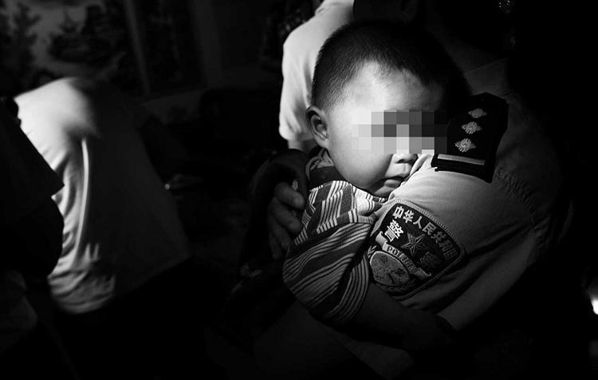
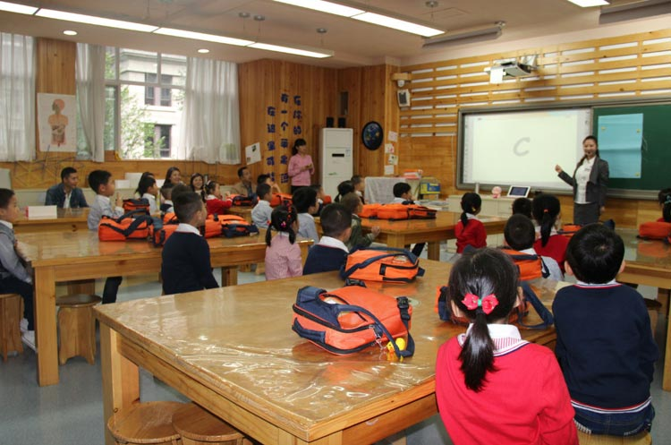

不久前的朋友圈被一条消息疯狂刷屏——“我支持拐卖儿童判死刑，不求点赞，请接力转发”。在以往生活中，我们都或多或少听闻过拐卖儿童的案例。我们愤怒更多是因为无法忍受骨肉分离对精神和肉体带来的痛苦，它太残忍了。其实，中小学生受到的伤害，又岂止是被拐卖这一件……
中小学生缺乏安全保护意识所引发的伤害，近年来数据持续呈上升趋势，缺乏安全保护意识成为了造成中小学生非正常死亡的主要原因。
来自权威部门的数据资料显示，我国如今每年有50余万人次学生遭受意外伤害，这已成为威胁学生安全的头号杀手。从教育部门的统计来看，我国中小学生每年非正常死亡人数都在1万人以上。1999年，中小学生因食物中毒、溺水、交通事故、自杀死亡的，平均每天都有40多人，相当于每天有一个班的孩子消失，受伤的中小学生就更多了。仅2001年，我国就有1．6万名中小学生非正常死亡。
为加强对中小学生的安全教育，1996年2月，国家教委、公安部等六部委联合发出通知，把每年3月最后一周的星期一定为全国中小学生安全教育日，建立全国中小学生安全教育制度，敦促安全教育工作的开展。
每届安全教育日都会根据当时社会高发的中小学生遇险事件拟定合适的主题，以此强化中小学生的安全意识，让它们更好的保护自己。如：交通安全教育，消防安全教育，预防药物不良反应，校园安全，关注学生饮食安全，加强疏散演练……从可能发生危险的方方面面着手，保障孩子的安全。
不可抗的因素导致他们遇险，我们会惋惜、会心痛。但是类似儿童拐卖这种人为侵害中小学生安全的事件，必须加强立法管理，对坏人说“走开，他们还是个宝宝”！
1、每年的3月28日是全国中小学生安全宣传教育日，是为了强化中小学生安全意识而设立的节日；
2、每个人都有自己的孩子，所以不要去伤害别人家的孩子。